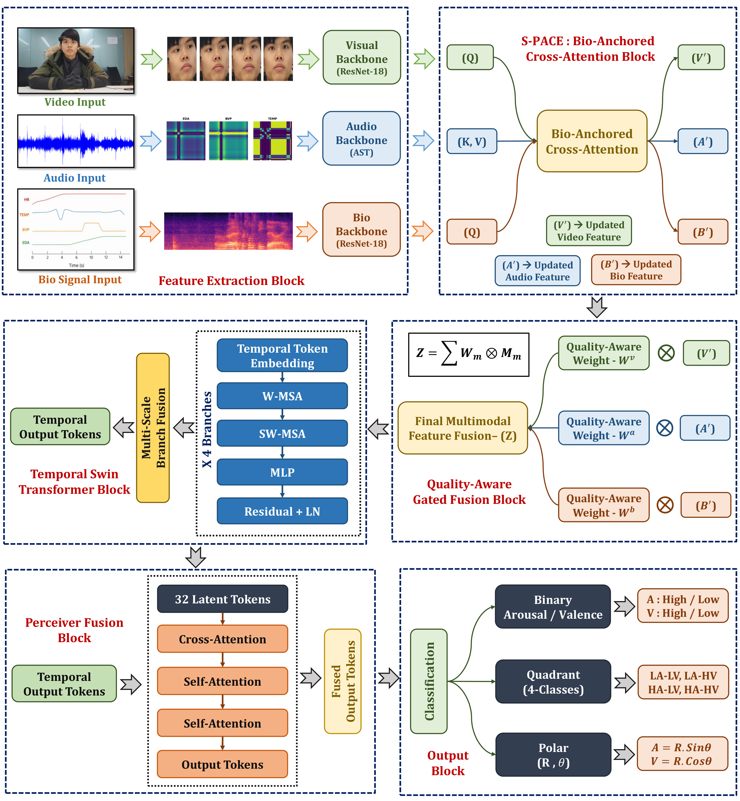

표정·음성·웨어러블 생체신호를 융합해 사람의 감정과 상태를 인식하는 멀티모달 AI를 연구한다. 연구 결과를 논문·특허·온디바이스 데모·앱 출시까지 연결해온 실전형 AI 연구자.
통계학(동국대) 출신의 AI Researcher. 표정·음성·웨어러블 생체신호를 융합해 사람의 감정·상태를 읽는 모델을 설계하고, Jetson 기반 온디바이스 실시간 추론까지 직접 구현한다. 세종대 HEART Lab에서 산업부 차량 감성 AI R&D 과제를 데이터 수집 파이프라인 구축부터 모델 설계, 실시간 추론, 실차 데모까지 주도한다. 석사 재학 중 이미 SCIE 1편 · 특허 4건 · 실차 데모를 완료했다.
카메라 기반 표정 인식, 마이크 기반 음성, 웨어러블 생체신호를 결합해 운전자의 감정과 상태를 실시간으로 추정하는 온디바이스 인식 시스템. 데이터 수집 → 감정·상태 인식 → 상황 판단 → 차량 HMI 응답까지 이어지는 파이프라인을 Jetson 기반 엣지 환경에서 구현했고, 데이터 수집 시스템은 원격으로 직접 구축했다. v1→v3 Agentic DMS로 발전.
행동·생리 신호의 시간차를 cross-modal alignment로 맞추고 quality-aware gating으로 신뢰도를 조절하는 강건한 멀티모달 감정인식. 라벨 collapse 발견에서 인과 융합(CBBF)으로 이어지는 연구의 출발점.
LLM을 오케스트레이터가 아니라 워커로 두는 자율연구 하네스(harness). 연구 프로토콜을 프롬프트가 아니라 코드 레벨에서 강제한다 — frozen JSON 스키마, append-only 해시체인 로그, hook 게이트로 재현성과 무결성을 구조적으로 보장. 가설 사전등록부터 통계 검정, 적대적 자기검증까지 한 파이프라인에 묶었다.
발달장애인·보호자·복지관을 잇는 AI 일정 도우미. 봉사 챗봇(온쿡)에서 출발해 Flutter 앱으로 출시. 연세대 강연을 계기로 사회복지 대학원 연구실과 협업해 웹 프로토타입까지 제작했다 — 외부 연구실이 먼저 찾은 제품.

| Title | Application No. |
|---|---|
| 멀티모달 감정 인식 및 감정 표현 생성 방법 및 그 장치 | 10-2025-0055652 |
| 멀티모달 인공지능 기반 운전자 감정 인식 시스템 | 10-2026-0020705 |
| 식물 바이오 신호를 이용한 감정 인식 시스템 | 10-2025-0174160 |
| 한국인 표정 특성을 반영한 FACS 기반 감정 인식 방법 및 시스템 | 10-2025-0070458 |
발달장애인 AI 요리교실(온쿡)을 단독 기획·운영. 만족도 4.83/5, LG헬로비전 방송 보도.
대학원 수업에 전문가로 초청 강연(온쉐어 사례). 이후 사회복지 대학원 연구실과 협업해 웹 프로토타입 제작.
상권 데이터로 팝업 공간을 자동 설계하는 엔진. 100% 본인 소유, 개발 중.